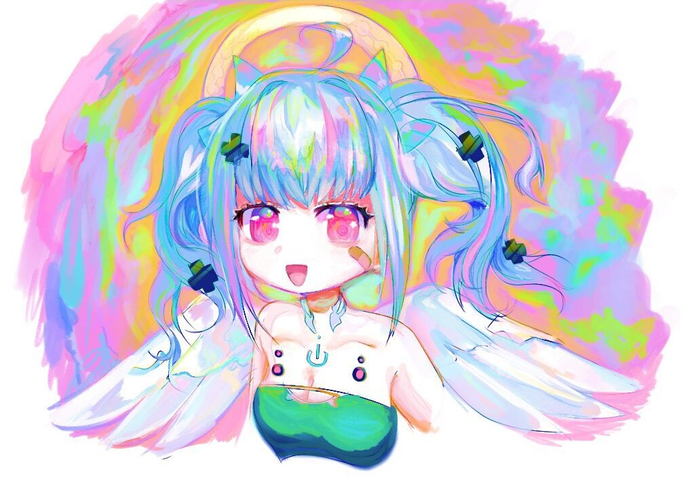
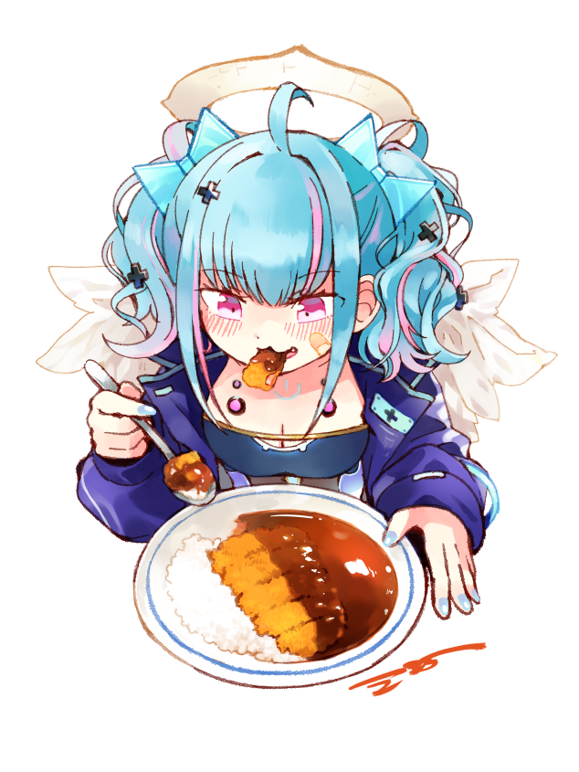
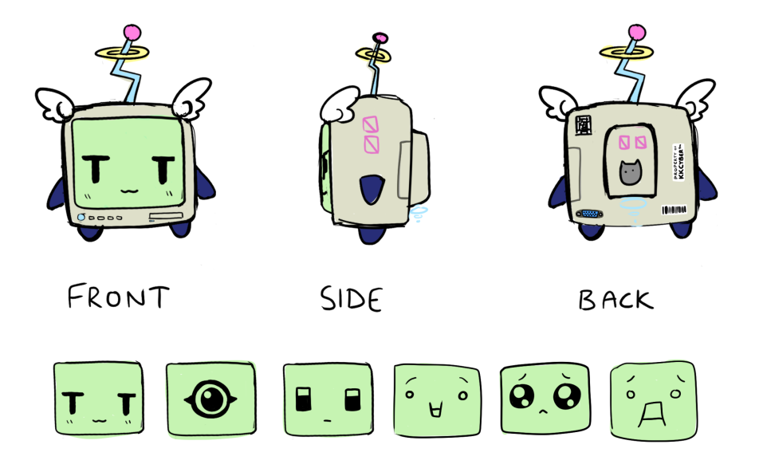
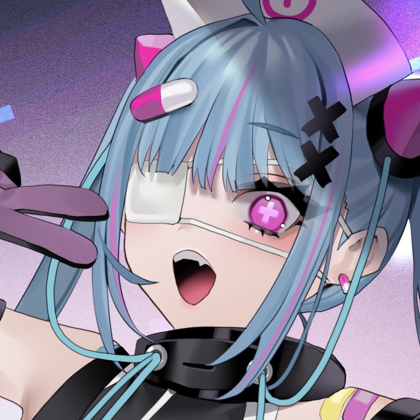
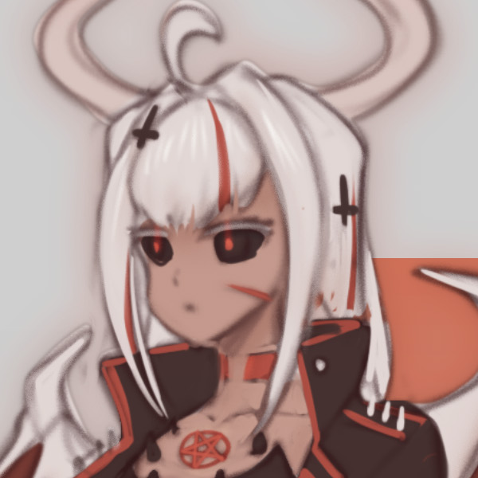
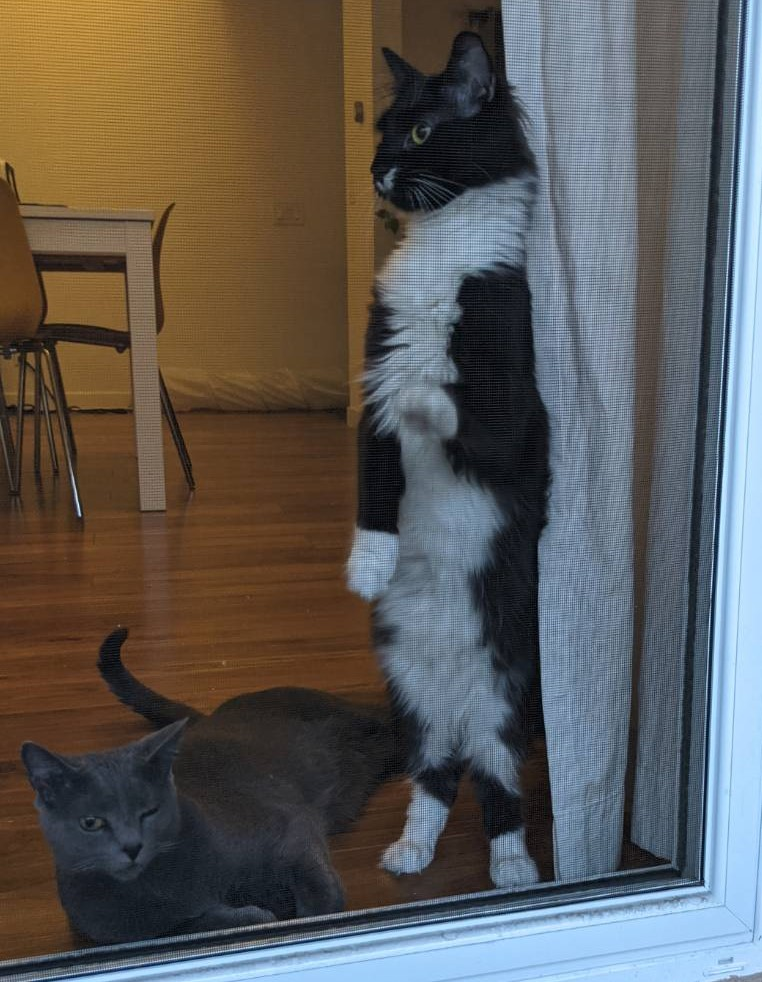

Your Cybernetic A.I. Angel and new Denpa Desktop Buddy!
i compiled some of KKs clips into this video
KK Cyber is a genki streamer desktop buddy. i think she really owns. she's always working hard to make us smile. im very lucky to be a part of the community she's brought together.
kk is always pushing herself to try new things and improve in all sorts of ways and i think that's really admirable. sometimes she can be too hard on herself though. kk will even help other push themselves further by offering words of encouragement and helpful advice.
thank you for all your hard work tenshi!!!! HARD WORK AND GUTS!!!!!!!

KK Cyber digital painting by Alice Sawyer
KK Cyber nicknames
KK
K2
Tenshi
Tensho
Temsi
10shi
Kangel
KKlown
Tesi
Kevin
Punching Bag
Femcel Tenshi
KitKat Cyber
Teshi
Tesh
Tesco
Tabasco
Temsho
Tmenshi
Tensi
Clownshi

KK Cyber drawing by ekiaroll, commissioned by lucidchama
That's you, Seeder-kun!

Seeder-kuns reference art
Seeder-kun is KK's mascot, they represent you, me, and TheRandomPieman. Seeder-kun used to have really bad posture, but that was fixed after we were killed by Akkuma (more on Akkuma later). Out of kindness, or maybe pity, or maybe disgust, KK revived us with a shiny new husk body!
Tenshi, Evolved

a teaser image of kk's evolved design
kk's evolution is upon us.
oh god oh fuck she's so hot i mean oh no im scared

artistic rendering of akkuma... she's so awawawawawa i mean scary by Zhjake
Not much is known about akkuma. What we do know is that she definitely isn't just KK in cosplay. She exists to hurt seeders, just like KK.
uh oh stinky!!!

who's a good boy who's a good baby are you stinky? yeah? what a little baby!! got little peats!!!